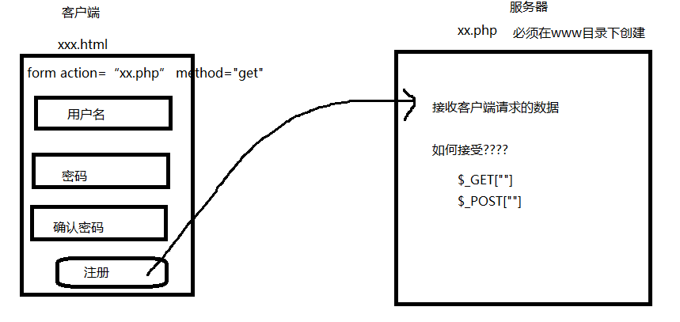

1、服务器和客户端
客户端 程序： 通过浏览器直接运行
服务器 程序： 通过安装某种服务器软件 程序才可以运行
apache php文件
tomcat jsp文件
iis .asp文件 .net
服务器文件必须在某种协议下运行 http 和 https 默认端口号 80
2、php语法
语法规范：
1、语句结束后必须有 分号
2、严格区分大小写
3、所有的标点符号都是英文半角状态
变量定义 : 必须使用$开始
三大结构 ：
顺序
选择
循环
数组 ： 索引数组 和 关联数组
3 、 php 服务器如何接受前端数据
$_GET[] 接收通过get方式请求的数据
$_POST[] 接收通过post方式请求的数据
（扩展） $_REQUEST[] 既可以接收get方式 也可以接收post方式请求的数据

4、php生成动态网页的原理 : 服务器操作数据的更新过程，这样的数据就是动态生成的数据 数据显示到页面后，这样的网页也叫动态网页

5、php如何将一个数组转成json
json_encode() 将php的数组转成json对象 （一般数组是一个关联数组）
6、xss 攻击
什么是xss ： 跨站脚本攻击 cross site scripting 为了不和层叠样式表混淆，叫做xss
用户输入一些具有特定含义的字符 数据提交到服务器上，这些特殊的字符可以被服务器识别
如何解决 ：
前端正则 （不能彻底解决xss攻击问题 ： 内行编程者会将html代码复制到另一个页面上 实现攻击效果 ）
最好解决办法：后端验证 （去掉标签） 通过 strip_tags() 函数去掉标签
7、数据库
数据库 ： 存放数据的仓库 U盘 硬盘
常见数据库语言 ： sqlServer mysql oracle db2
数据库中存放的数据都是被结构化的数据。
结构化 ： 数据库中的数据 就是以表格的形式存在的
表格是由行和列组成
每一列的标题 叫做 字段 标题的对应的内容 就是 表数据
关系型数据库 ： 数据库由多张表构成 每一个表示由多行多列组成
存放数据：
第一步：创建数据库
代码实现 ：
create database 数据库名
第二步： 创建表
create table 表名
(
字段名 类型,
字段名 类型,
....
)
第三步： 对表中的数据进行 增 删 改 查
增：insert into 表名(字段1,字段2,...)values(值1,值2,...) 注意 ： 主键自增的字段数据忽略不填 如果值的类型是字符，值必须加引号
删除 ： delete from 表名 where 条件
条件说明：
表示等于 用 =
表示并且 用 and
表示或者 用 or
如果条件字段值是字符 必须加引号
改 ：
update 表名 set 字段=新值,字段=新值 where 条件
查 :
select * from 表名 查询表所有字段数据
select 字段名,字段名2 from 表名 查询指定字段
数据类型 ：
int 表示整型数据
char（100） 表示字符类型 varchar（100） 字符类型必须提供长度值
主键 ： primary key 特点 ： 数据不能重复（具有唯一性） 不能为空 一般一张表中的 编号 字段为主键
一般主键是自增的 auto_increment
如何设置主键：
create table 表名
(
sid int primary key auto_increment sid字段为 主键 并且是自增的
)